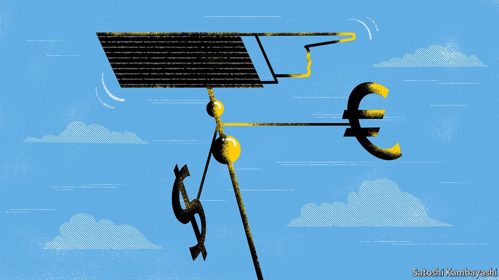
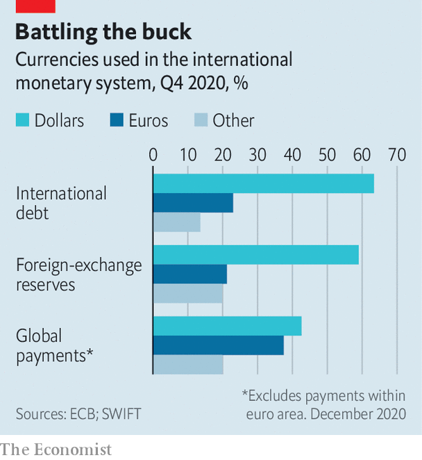
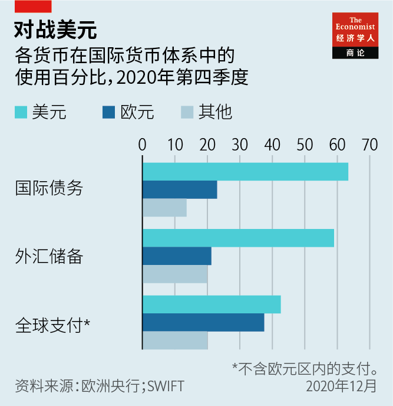

Text
2021-08-02T02:05:57+00:00
Euro visions
欧元愿景
歐元願景
The international role of the euro
欧元的国际地位
歐元的國際地位
Europe’s currency aspirations are getting a boost
欧洲的货币雄心正得到提振【深度】
歐洲的貨幣雄心正得到提振【深度】

WHEN THE European Union launched the euro two decades ago, economists wondered if the new currency might pull off a feat no other had managed in the post-war period: to challenge the mighty American dollar. However, reserve managers at the world’s central banks, as well as businesses around the world, largely stuck with the greenback. Now Europe is having another go at establishing the bona fides of the euro beyond its borders. A significant step was taken on June 15th when €20bn-worth ($24.3bn) of bonds was issued as part of the Next Generation EU (NGEU) scheme to boost European economies. Those bonds could yet rival American Treasury bonds as a safe asset of choice.
二十年前欧盟推出欧元时，经济学家就在猜想这种新货币能否实现战后其他货币都没能完成的壮举：挑战强大的美元。然而，各国央行管理外汇储备的官员和世界各地的企业基本上仍然坚持使用美元。现在，欧洲正再次尝试在欧洲之外建立起欧元的信誉。它在6月15日迈出了重要一步，发行了价值200亿欧元（243亿美元）的债券，这是提振欧洲经济的“新一代欧盟”（Next Generation EU，以下简称NGEU）计划的一部分。这些债券或许将能与美国国债竞争，成为首选安全资产。
二十年前歐盟推出歐元時，經濟學家就在猜想這種新貨幣能否實現戰後其他貨幣都沒能完成的壯舉：挑戰強大的美元。然而，各國央行管理外匯儲備的官員和世界各地的企業基本上仍然堅持使用美元。現在，歐洲正再次嘗試在歐洲之外建立起歐元的信譽。它在6月15日邁出了重要一步，發行了價值200億歐元（243億美元）的債券，這是提振歐洲經濟的“新一代歐盟”（Next Generation EU，以下簡稱NGEU）計劃的一部分。這些債券或許將能與美國國債競爭，成為首選安全資產。
Currencies exist mainly to facilitate the transactions of people and businesses within the borders of the places that issue them. But having an international presence helps in many ways. For firms, having imports and exports denominated in their local currency rather than, say, the dollar, means less disruption when exchange rates inevitably see-saw. Issuing a currency that foreigners want to hold can make it easier for governments to raise money from them at cheap rates. That in turn drives down the cost of borrowing for firms and banks.
货币的作用主要是为了便利个人和企业在发行国境内的交易。但具有国际影响力的货币能带来许多好处。企业在进出口时如果能以本币而非美元等他国货币计价，那么当汇率不可避免地上下波动时，受到的冲击就会更小。一国政府发行的货币如果受外国人欢迎，它就可能更容易以低利率从境外筹资。这进而又会压低企业和银行的借贷成本。
貨幣的作用主要是為了便利個人和企業在發行國境內的交易。但具有國際影響力的貨幣能帶來許多好處。企業在進出口時如果能以本幣而非美元等他國貨幣計價，那麼當匯率不可避免地上下波動時，受到的衝擊就會更小。一國政府發行的貨幣如果受外國人歡迎，它就可能更容易以低利率從境外籌資。這進而又會壓低企業和銀行的借貸成本。
The euro is widely available outside the 19 countries that formally use it. About two dozen countries link their own currencies to it in some way, albeit mainly former European colonies and close neighbours. Between a third and half of all euro banknotes by value are held outside the euro area, according to the European Central Bank (ECB). Nevertheless, by the normal measures used to gauge international usage, it is a distant runner-up to the dollar.
欧元在19个正式使用它的国家以外也得到了广泛采用。约有20多个国家的本币在某种程度上与欧元挂钩，虽然它们大部分是欧洲的前殖民地和近邻。根据欧洲央行的数据，全部欧元纸币价值的约三分之一到一半在欧元区以外持有。然而，按衡量货币国际使用量的正常标准计算，排在第二的欧元仍远落后于美元。
歐元在19個正式使用它的國家以外也得到了廣泛採用。約有20多個國家的本幣在某種程度上與歐元掛鉤，雖然它們大部分是歐洲的前殖民地和近鄰。根據歐洲央行的數據，全部歐元紙幣價值的約三分之一到一半在歐元區以外持有。然而，按衡量貨幣國際使用量的正常標準計算，排在第二的歐元仍遠落後於美元。
Around a fifth of all foreign-exchange reserves owned by central banks, and a similar percentage of cross-border loans and bonds, are denominated in euros—the share for the dollar is about 60%. The euro’s share of payments for transactions is much closer to that of the dollar (see chart), unsurprisingly given that the EU is the world’s biggest trader of goods and services. Still, commodities like oil and cotton are mostly priced in dollars.
各国央行拥有的外汇储备中大约五分之一是欧元，跨境贷款和债券中以欧元计价的比例也差不多。而美元的这两项占比都在60%左右。欧元在国际收支中所占的份额与美元的差距要小得多（见图表），考虑到欧盟是世界最大的商品和服务贸易经济体，这不足为奇。不过，石油和棉花等大宗商品仍然主要以美元计价。
各國央行擁有的外匯儲備中大約五分之一是歐元，跨境貸款和債券中以歐元計價的比例也差不多。而美元的這兩項佔比都在60%左右。歐元在國際收支中所佔的份額與美元的差距要小得多（見圖表），考慮到歐盟是世界最大的商品和服務貿易經濟體，這不足為奇。不過，石油和棉花等大宗商品仍然主要以美元計價。
In its first few years the single currency looked as if it might rival the post-war champion. By 2007 the euro even became the most popular currency in which to issue foreign-currency-denominated debt (for example by multinationals). It was not to last. The financial crisis that started that year prompted skittish investors to fall back on the dollar as their currency of choice. The euro-zone miasma that ensued, during which the very survival of the single currency came into question, seemed to vindicate their decision. Depending on the measure used, the euro has since flatlined or lost importance.
在问世后最初的几年里，这个单一货币看似有机会与战后霸主抗衡。到2007年，欧元甚至成为发行外币计价债券时最常用的币种（比如很受跨国公司欢迎）。然而好景不长。同年爆发的金融危机让胆颤心惊的投资者重新投入了美元的怀抱。随后欧元区经济陷入困境，在此期间单一货币能否维系下去也成了问题，似乎证明了投资者的决策很英明。此后欧元再无起色，或者日渐式微——待看用什么衡量标准。
在問世後最初的幾年裡，這個單一貨幣看似有機會與戰後霸主抗衡。到2007年，歐元甚至成為發行外幣計價債券時最常用的幣種（比如很受跨國公司歡迎）。然而好景不長。同年爆發的金融危機讓膽顫心驚的投資者重新投入了美元的懷抱。隨後歐元區經濟陷入困境，在此期間單一貨幣能否維繫下去也成了問題，似乎證明了投資者的決策很英明。此後歐元再無起色，或者日漸式微——待看用什麼衡量標準。
Europe now wants to have another crack, if not at overtaking the dollar, then at least at reducing the latter’s dominance. Two changes in circumstances mean there is a chance the euro could gain ground.
现在，欧洲想再试一次，哪怕不能超越美元，至少也要削弱它的支配地位。当前形势发生了两个变化，让欧元有机会取得进展。
現在，歐洲想再試一次，哪怕不能超越美元，至少也要削弱它的支配地位。當前形勢發生了兩個變化，讓歐元有機會取得進展。
The first is America’s changing attitude to international economic policymaking—at least under the presidency of Donald Trump. His brand of jingoistic protectionism jarred with the obligations incumbent on the issuer of the world’s reserve currency. Even under the more conciliatory Biden regime, Europe frets that its interests will not always be aligned with America’s. Relying on the dollar is perceived as an even greater potential vulnerability than before.
首先是美国在国际经济政策方面态度转变——至少在特朗普总统任内是如此。他招牌式的强硬保护主义与世界储备货币发行国应负的责任格格不入。即使拜登政府表现出更温和的态度，欧洲仍担心自己的利益不一定总能与美国保持一致。欧洲认为对美元的依赖是一种潜在软肋，现在这种感觉更强烈了。
首先是美國在國際經濟政策方面態度轉變——至少在特朗普總統任內是如此。他招牌式的強硬保護主義與世界儲備貨幣發行國應負的責任格格不入。即使拜登政府表現出更溫和的態度，歐洲仍擔心自己的利益不一定總能與美國保持一致。歐洲認為對美元的依賴是一種潛在軟肋，現在這種感覺更強烈了。
In March euro-zone leaders said that boosting the currency’s international use would help them achieve “strategic autonomy”. The EU has been particularly irked to discover that businesses in the region were in effect forced to abide by American sanctions that Europe opposed, for example on Iran. America has used the need of big banks to have access to dollars to police their behaviour far beyond its shores. Those that have fallen foul of American edicts have incurred large fines.
欧元区领导人在3月表示，推动欧元的国际使用将有助实现“战略自主”。一直以来让欧盟尤其恼火的一点是，区域内企业实际上是在被迫遵守由美国发起但欧洲反对的制裁，例如对伊朗的制裁。大型银行需要美元，美国利用这一点来监督远离其国土的银行的行为。那些违反美国命令的银行被处以巨额罚款。
歐元區領導人在3月表示，推動歐元的國際使用將有助實現“戰略自主”。一直以來讓歐盟尤其惱火的一點是，區域內企業實際上是在被迫遵守由美國發起但歐洲反對的制裁，例如對伊朗的制裁。大型銀行需要美元，美國利用這一點來監督遠離其國土的銀行的行為。那些違反美國命令的銀行被處以巨額罰款。
Critics see this extra-territorial prerogative as an undue weaponisation of the dollar. That has encouraged a change of mind among those who have traditionally been resistant to boosting the euro’s international role. In times of crisis, global reserve currencies tend to spike as investors seek a haven. Such unpredictable capital flows worried German monetary policymakers in the age of the Deutschmark; their scepticism carried over to the ECB. It has historically sought to “neither hinder nor foster” an international euro, but is now seen as more amenable to the idea.
批评人士认为这种域外管辖特权是把美元过度武器化。这促使那些历来反对提升欧元国际地位的人也开始改变想法。在危机时期，随着投资者纷纷寻求避风港，全球储备货币往往会飙升。在德国马克时代，德国的货币政策制定者对这种不可预测的资本流动感到担忧；他们的怀疑态度也延续到了欧洲央行。对于欧元国际化，欧洲央行历史上一直奉行“既不阻碍也不鼓励”的态度，但现在似乎更赞同了些。
批評人士認為這種域外管轄特權是把美元過度武器化。這促使那些歷來反對提升歐元國際地位的人也開始改變想法。在危機時期，隨着投資者紛紛尋求避風港，全球儲備貨幣往往會飆升。在德國馬克時代，德國的貨幣政策制定者對這種不可預測的資本流動感到擔憂；他們的懷疑態度也延續到了歐洲央行。對於歐元國際化，歐洲央行歷史上一直奉行“既不阻礙也不鼓勵”的態度，但現在似乎更贊同了些。
The second change came, unexpectedly, as a result of the pandemic. Whereas the last global recession brought the euro to the precipice, on this occasion the swift actions of the ECB and national governments to support their economies were well received. Such battle-hardening has boosted the credibility of the euro in a crisis—a key attribute of a global currency.
第二个变化来得出乎意料，是疫情造成的。上一次全球经济衰退将欧元推到了悬崖边缘，而这一次欧洲央行和各国政府为支持本国经济迅速行动，收获好评。经历过如此严峻的考验，欧元在危机中的可信度得到了增强——而这正是全球货币的一个关键属性。
第二個變化來得出乎意料，是疫情造成的。上一次全球經濟衰退將歐元推到了懸崖邊緣，而這一次歐洲央行和各國政府為支持本國經濟迅速行動，收穫好評。經歷過如此嚴峻的考驗，歐元在危機中的可信度得到了增強——而這正是全球貨幣的一個關鍵屬性。
Better yet, the bloc has responded to the crisis by tweaking the architecture of the single currency in ways that should bolster its international attractiveness. A big step was the creation of the NGEU scheme and the subsequent bond issuance. The bonds are backed, in effect, by the balance-sheet of all EU member states, thus making them roughly similar to America’s Treasury bonds. This is a relative novelty in Europe, where borrowing has mostly been done by national governments, whose creditworthiness varies. The new pan-EU bond creates a way for investors to save in euros without taking credit risk (as they might were they lending to Italy, say).
更有利的是，欧元区为应对疫情危机而对欧元架构所做的调整应该会增强欧元的国际吸引力。其中迈出的一大步是创立NGEU计划以及随后发行债券。这些债券实际上是由全体欧盟成员国的资产负债表共同担保，这让它们变得和美国国债大致相似。这在欧洲还是一种相对新颖的做法。以前主要是由各国政府自行举债，而它们的信誉参差不齐。这种新的泛欧盟债券让投资者能够以欧元储蓄而无需冒信用风险（比方说如果他们直接借钱给意大利就不好说了）。
更有利的是，歐元區為應對疫情危機而對歐元架構所做的調整應該會增強歐元的國際吸引力。其中邁出的一大步是創立NGEU計劃以及隨後發行債券。這些債券實際上是由全體歐盟成員國的資產負債表共同擔保，這讓它們變得和美國國債大致相似。這在歐洲還是一種相對新穎的做法。以前主要是由各國政府自行舉債，而它們的信譽參差不齊。這種新的泛歐盟債券讓投資者能夠以歐元儲蓄而無需冒信用風險（比方說如果他們直接借錢給意大利就不好說了）。
The absence of such a “safe asset” had been one element hampering the use of the euro internationally. All manner of cross-border operations, from central-bank reserve management to companies borrowing money in a foreign currency, are underpinned by a liquid risk-free benchmark. The bonds of Germany have served as an imperfect proxy until now, but the NGEU issuance “contributes to making the euro a better substitute for the dollar”, says Reza Moghadam of Morgan Stanley, a bank.
这种“安全资产”的缺失曾是阻碍欧元国际化的一个因素。从央行储备管理到企业外币借贷，所有形式的跨境运作都仰赖一个高流动性的无风险基准。在此之前德国债券一直充当了不完美的代用品，但是NGEU的发行“有助于使欧元成为替代美元的更好选择”，摩根士丹利的利萨·莫加丹（Reza Moghadam）表示。
這種“安全資產”的缺失曾是阻礙歐元國際化的一個因素。從央行儲備管理到企業外幣借貸，所有形式的跨境運作都仰賴一個高流動性的無風險基準。在此之前德國債券一直充當了不完美的代用品，但是NGEU的發行“有助於使歐元成為替代美元的更好選擇”，摩根士丹利的利薩·莫加丹（Reza Moghadam）表示。
Not all barriers to more international usage of the euro have disappeared. For one, the “safe asset” may prove temporary: in theory, the last NGEU bond will be issued in 2026, though many think the scheme will be extended in some way. The sums of money are also small by global financial standards. Total EU debt outstanding will peak at around $1trn, while America has over $20trn of debt outstanding that investors can trade.
欧元国际化进程的障碍并非已全部扫清。首先，“安全资产”到头来可能只是暂时性的：理论上，最后一批NGEU债券将在2026年发行，尽管许多人认为该计划将以某种形式延长。以全球金融标准衡量，其金额也不大。欧盟未偿债务总额最高将达到一万亿美元左右，而美国有超过20万亿美元的未偿债务可供投资者交易。
歐元國際化進程的障礙並非已全部掃清。首先，“安全資產”到頭來可能只是暫時性的：理論上，最後一批NGEU債券將在2026年發行，儘管許多人認為該計劃將以某種形式延長。以全球金融標準衡量，其金額也不大。歐盟未償債務總額最高將達到一萬億美元左右，而美國有超過20萬億美元的未償債務可供投資者交易。
And some of the single currency’s idiosyncrasies remain. The euro area lacks some of the important elements of a coherent financial union, for example risk-sharing if banks totter. Lack of fiscal redistribution—the NGEU notwithstanding—means a rerun of the euro-zone crisis is still possible. Capital markets are still thin and balkanised, unlike those of America. The lack of a single financial hub after Brexit does not help.
此外，欧元的某些独特性仍然存在。要成为统一的金融联盟，欧元区还缺失了一些重要元素，例如当银行陷入困境时分担风险。尽管推出了NGEU，财政再分配的机制仍然缺位，意味着欧元区的危机仍可能重演。与美国不同，欧洲资本市场仍然根基薄弱且七零八落。英国脱欧后欧洲失去了单一的金融中心，更是雪上加霜。
此外，歐元的某些獨特性仍然存在。要成為統一的金融聯盟，歐元區還缺失了一些重要元素，例如當銀行陷入困境時分擔風險。儘管推出了NGEU，財政再分配的機制仍然缺位，意味着歐元區的危機仍可能重演。與美國不同，歐洲資本市場仍然根基薄弱且七零八落。英國脫歐後歐洲失去了單一的金融中心，更是雪上加霜。
Whether gaining share from the dollar helps insulate Europe from America’s reach is questionable: banks will always need dollars, and thus a foothold in New York, even if the euro thrives. (A European plan to circumvent sanctions on Iran largely floundered.) Few think the single currency can displace the greenback, but it could perhaps rebalance the international monetary system. That may help reduce the disruptions caused by American central bankers, for example when a slight tightening of monetary policy in 2013 caused a “taper tantrum” that reverberated globally. The euro is the obvious currency to provide diversification.
从美元那里分走一些份额能否让欧洲隔绝于美国的触手值得怀疑：银行总是需要美元的，因此即使欧元扩张，它们仍需在纽约有立足点。（欧洲规避对伊朗制裁的计划基本上失败了。）没有谁会认为欧元可以取代美元，但它或许可以重新平衡国际货币体系。这可能有助于减少美国央行官员造成的混乱，例如2013年美国略微收紧货币政策就引发了波及全球的“缩减恐慌”。欧元是实现货币多元化显而易见的选择。
從美元那裡分走一些份額能否讓歐洲隔絕於美國的觸手值得懷疑：銀行總是需要美元的，因此即使歐元擴張，它們仍需在紐約有立足點。（歐洲規避對伊朗制裁的計劃基本上失敗了。）沒有誰會認為歐元可以取代美元，但它或許可以重新平衡國際貨幣體系。這可能有助於減少美國央行官員造成的混亂，例如2013年美國略微收緊貨幣政策就引發了波及全球的“縮減恐慌”。歐元是實現貨幣多元化顯而易見的選擇。
In 2019 Mark Carney, then governor of the Bank of England, mused that technology might disrupt the kinds of network effects that anchor the dollar at the heart of international finance. The rise of digital currencies issued by central banks, which the ECB is considering, might result in a new equilibrium where many currencies share global reserve-currency status. That could provide space for China’s yuan, which has its own global aspirations but is hampered now by its lack of convertibility.
2019年，时任英国央行行长的马克·卡尼（Mark Carney）思忖，技术可能会打破将美元锚定在国际金融核心位置的那种网络效应。由各地央行发行的数字货币正在兴起，欧洲央行也在考虑发行自己的数字货币，这可能会形成一种新的均衡，由许多货币共享全球储备货币地位。中国的人民币也可能由此获得发展空间。人民币有自己的全球抱负，但目前因不可自由兑换而受阻。
2019年，時任英國央行行長的馬克·卡尼（Mark Carney）思忖，技術可能會打破將美元錨定在國際金融核心位置的那種網絡效應。由各地央行發行的數字貨幣正在興起，歐洲央行也在考慮發行自己的數字貨幣，這可能會形成一種新的均衡，由許多貨幣共享全球儲備貨幣地位。中國的人民幣也可能由此獲得發展空間。人民幣有自己的全球抱負，但目前因不可自由兌換而受阻。
Such an outcome still feels some years away. But it would mark a return to the norm before the second world war in which several currencies, including the dollar, held joint dominance. Europe has long bristled at the “exorbitant privilege” America enjoys thanks to the dollar’s special status. It may find it less intolerable if it can seize a share of it. ■
这样的前景似乎还需要等待些年头。但这将标志着回归到二战前的常态，当时包括美元在内的几种货币共同占据主导。长期以来，欧洲一直对美国凭借美元的特殊地位而享有的“超级特权”感到恼火。如果它也能在其中占得一席之地，或许就不会那么计较了。
這樣的前景似乎還需要等待些年頭。但這將標誌着回歸到二戰前的常態，當時包括美元在內的幾種貨幣共同佔據主導。長期以來，歐洲一直對美國憑藉美元的特殊地位而享有的“超級特權”感到惱火。如果它也能在其中佔得一席之地，或許就不會那麼計較了。